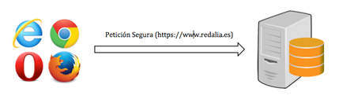
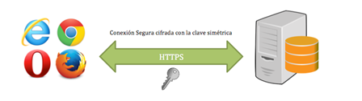
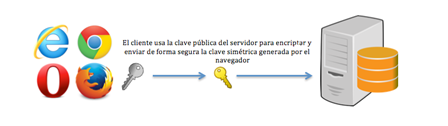

El protocolo SSL, "Secure Socket Layer" (Capa de Puertos Seguros), que cuando llegó a su versión 3.0 pasó a llamarse TLS, "Transport Layer Security" (Seguridad de la Capa de Transporte). Se trata de un protocolo criptográfico que garantiza que la información transmitida por la red no pueda ser interceptada ni modificada por elementos no autorizados, garantizando de esta forma que sólo los emisores y los receptores legítimos sean los que tengan acceso a la comunicación de manera íntegra.
Uno de sus usos más extendidos, es el que se realiza junto al protocolo HTTP, dando lugar al HTTPS o versión segura de HTTP. Se utiliza para la transferencia de hipertexto (Sitios Web) de manera segura, pero también se le puede ver con otro tipo de protocolos como TCP y SMTP.
El protocolo SSL se utiliza tanto en criptografía asimétrica cmo en simétrica, y funciona de la siguiente manera:




El uso de este protocolo, nos proveerá de la propiedad de confidencialidad a través de este certificado y de la propiedad de integridad, a través del uso de funciones HASH.